Introduction
Expected threat, or xT, is a concept widely spoken, widely used and already well known. To hop onto the trend, I made use of the “Calculating xT (position-based)” tutorial presented by soccermatics (https://soccermatics.readthedocs.io/en/latest/gallery/lesson4/plot_ExpectedThreat.html).
In my short project I made use of the Serie A (2015/2016) dataset provided by statsbomb. I extracted data from the top four teams of that year (Inter Milan, Juventus, Napoli, Roma) and compared it to four middle table teams for that season (Lazio, Fiorentina, Empoli, Genoa) across a few sector-based metrics that can be visualized using heatmaps (goal frequency per sector, ball movement rate per sector, shot frequency per sector, xG per sector and xT)
The aim is to look for any visible differences that make top teams different to middle table teams. Perhaps in the plots we see visible areas where middle table teams can make the jump to top table teams, based on their style of attack.
Ball Movement
One fundamental part of football is ball movement. Each team has it’s own pattern in terms of how the ball is moved. Some enjoy play on the flanks and rely more on their wingers to put in crosses, other teams generate more central attacks and make use of creative midfielders while others (although not so often anymore) may use longer passes to move the ball forward quicker, or to overcome a high press. Teams can also change their style from game to game as they adapt to their opponents.
These aspects one would expect to be able to see on a visual, by plotting where on the pitch each team commonly moves the ball. Below is a plot showing the ball movement heatmap of the eight teams we are investigating.
Ball Movement Heatmaps


Top four plots belong to the top four teams (arranged in order from 1st to 4th going left to right). The bottom row of the plot are the four mid-table clubs in order of their final league positions (5th, 8th, 10th and 11th)
Here are key observations that stand out when analysing this plot:
Darker squares in the Juventus and Napoli (placed 1st and 2nd in the league) heatmaps compared to the other clubs. This is an indication of a higher frequency of ball movement.
The pattern of play is similar amongst all teams in terms of where ball movement happens most (center and then wide).
Napoli and Inter Milan show a stronger favoritism to move the ball toward the left side of the field.
Juventus seem to utilize both flanks equally.
Juventus, Napoli and Empoli have darker middle squares compared to the others, thus showing a stronger reliance on their central midfielders.
Shot Frequency
Ball movement is only the half of it, if you don’t shoot, you won’t score. Below we visualize plots of shot frequency per sector and we compare the heatmaps between each team.
Shot Heatmaps


Key observations:
Juventus and Napoli are more likely to take shots from outside or on the edge of the box compared to other teams.
Napoli take more shots from more frequently from the left side of goal compared to other clubs. Perhaps due to a winger often coming inside and shooting (this would need to be investigated more).
Roma, Inter Milan, Genoa and Empoli take most of their shots from the left side of the penalty spot compared to other teams. Juventus is the only team that favour the sector right of the penalty spot.
Goal Frequency
In fact, sometimes when you shoot you don’t score… Goals are everything. Below we plot goal frequency per sector for each team and we investigate how these differ from team to team.
Goal Frequency Heatmaps


Key observations:
Juventus score more from shots outside the box compared to the other teams. This coincides with their superior shooting frequency from outside the box.
Inter Milan have a very small segment from which their goals come from. They rely on working the ball into the box around the penalty area. (restricting them to shots from outside the box may be beneficial) A similar pattern is evident for Fiorentina and Genoa.
Most teams score most of their goals from the 4 sectors just oustide the 6 yard box (focused defense in this section, or prevention of the ball getting into this section could be key).
xG
The expected goals from each section will tell us which sections a team could be most dangerous in. Further investigation should go into which player is most dangerous in each sector. This could improve on defensive tactics, however, it is most likely that the player who scores most should be on the ball the least in the sections where xG is the highest for each team. Below we see the xG heatmap for each team.
xG Heatmap
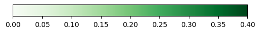
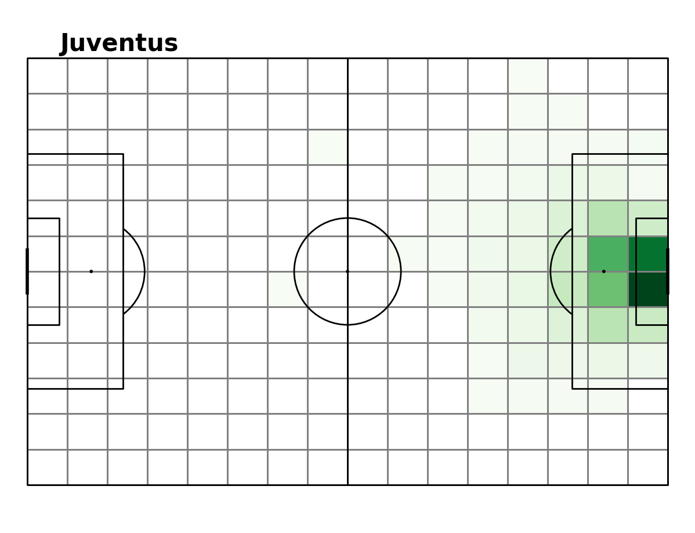
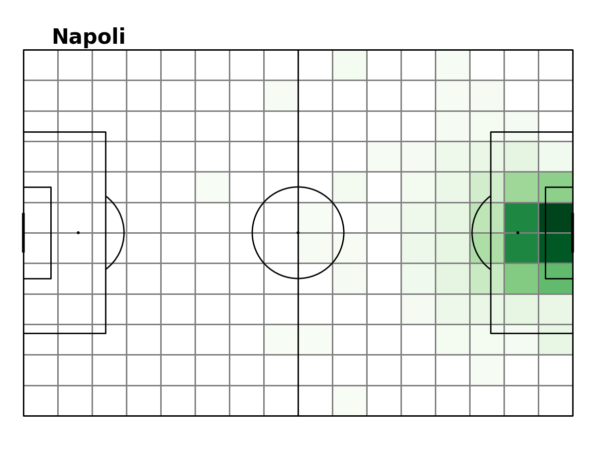


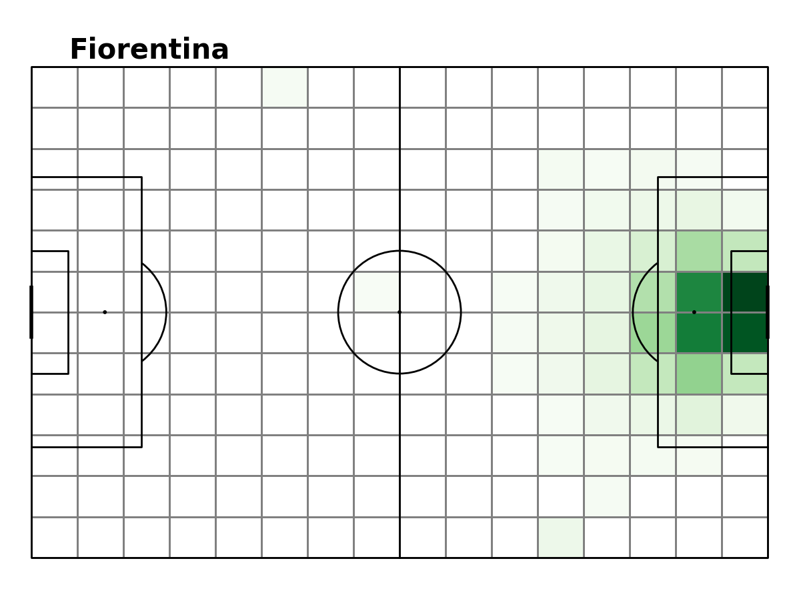
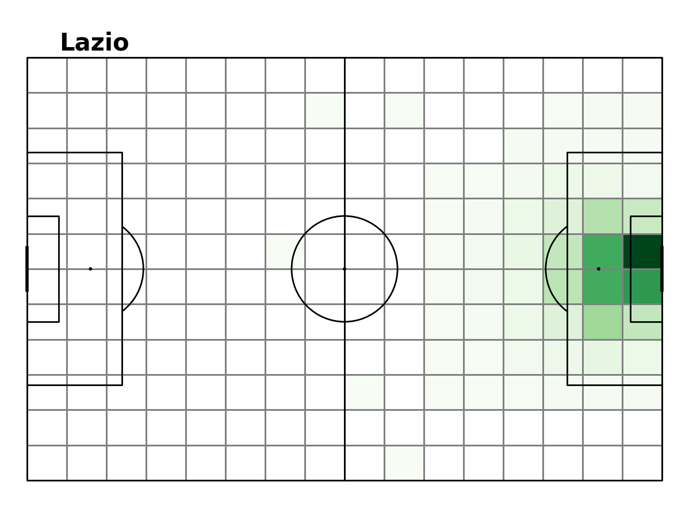
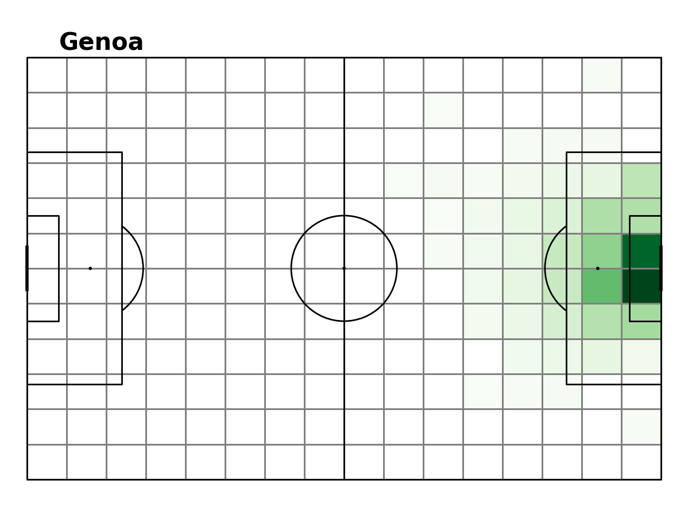
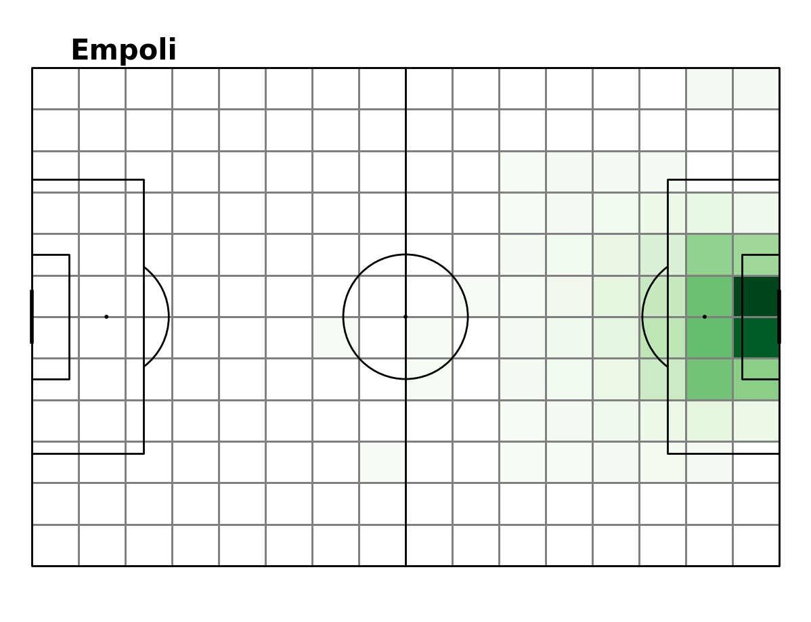
The xG displayed in this plot was calculated by statsBomb
Key points:
- xG plots mostly coincide with the goal frequency plots.
xT
Expected threat is the method that bases a value score on every section on the pitch. When a team has the ball in a sector that has a higher xT than the last, they have effectively increased their chances of scoring a goal. If a team moves the ball from a high xT zone to a lower xT zone they decrease their chances of scoring a goal (theoretically). For further details on xT see the following post here. Below is a plot of each team’s xT heatmap.
xT Heatmap
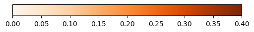
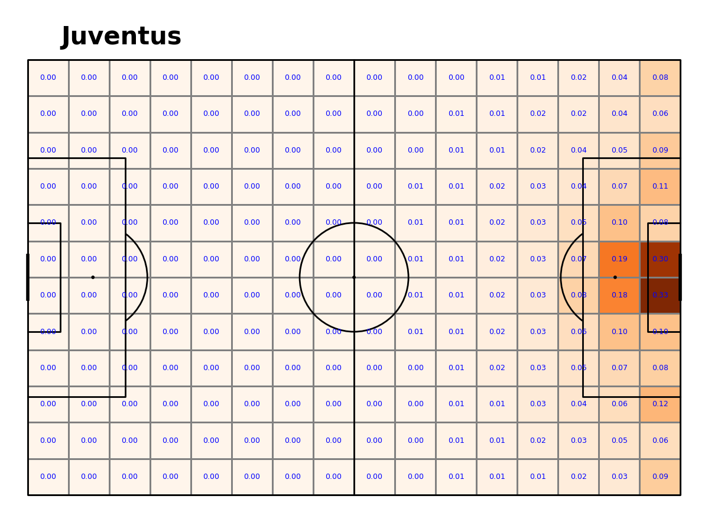
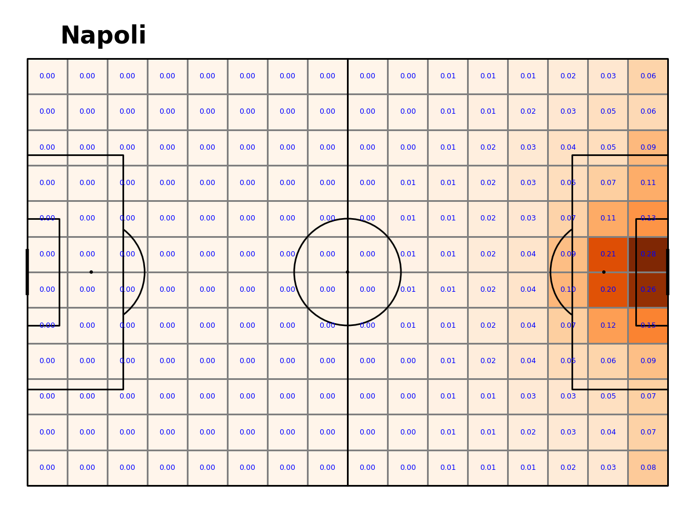


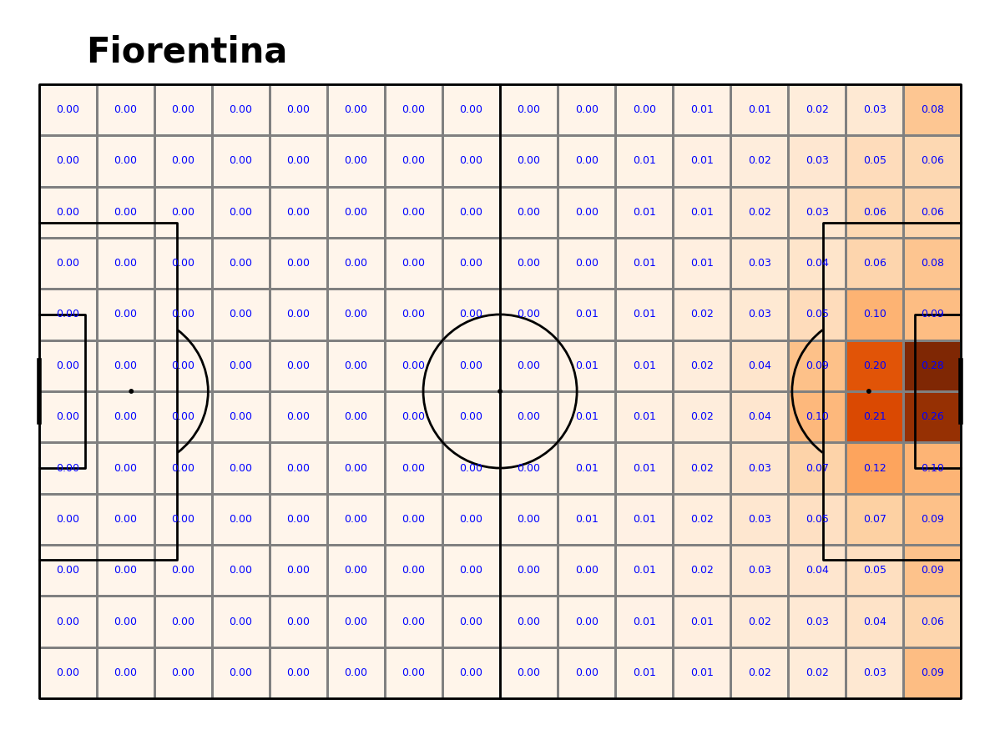
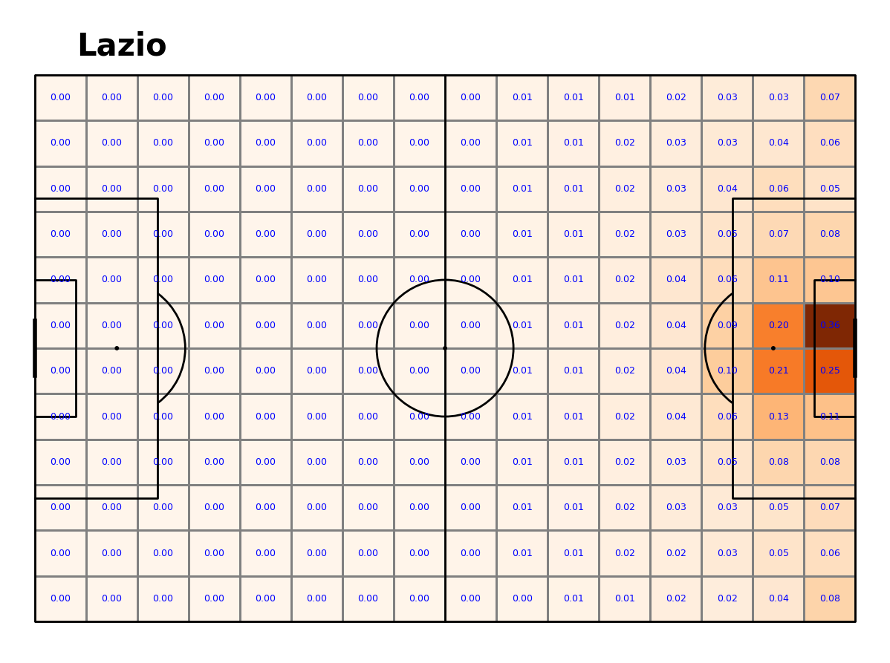
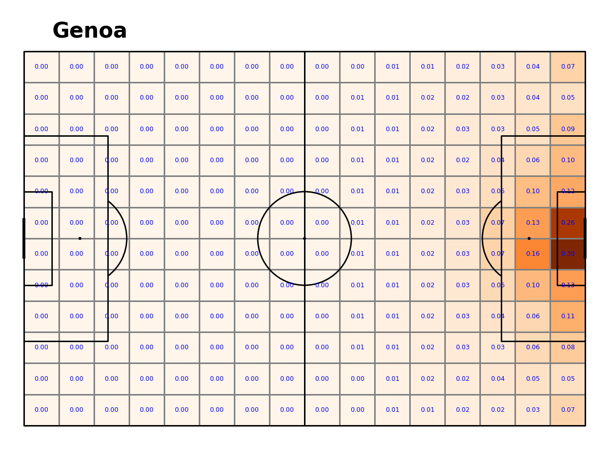
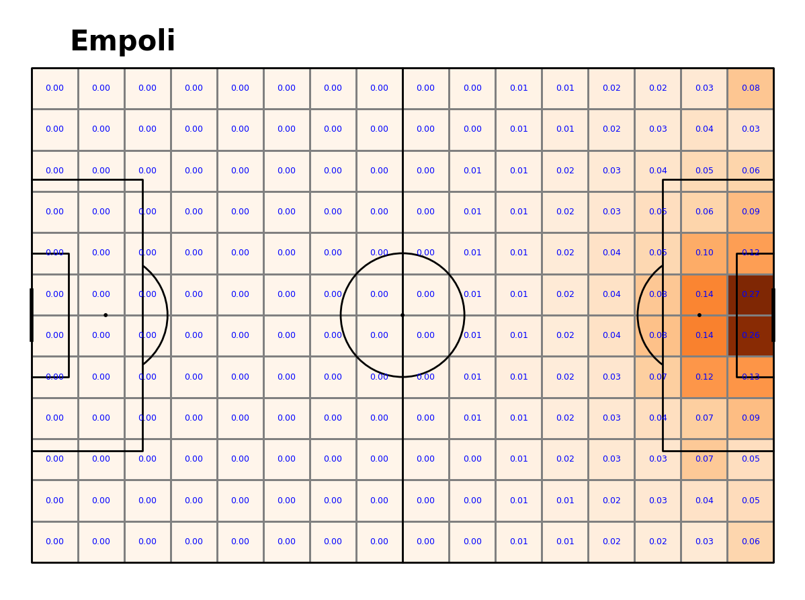
Key points:
Fiorentina, Napoli and Lazio have a higher threat around the penalty area compared to the other teams.
Juventus have a uniquely high threat in the sector that lies two sectors above the bottom right corner (xT = 0.12).
Juventus have the highest xT in the 6 yard box compared to the other teams. This is a good indication that Juventus were more clinical with their finishing compared to the other clubs.
xT is always highest in the four sectors that encompass the penalty spot and the face of the goal. This is the same for all teams.
Conclusion
So, what sets the top teams apart from the rest? Below we have some concluding points that became evident in these visualisations:
Top sides move the ball more.
Top sides shoot more frequently and take their chances from outside the box too. They, try their luck or have more confidence (further research could be applied here).
Top teams are more clinical when they get into ideal goal scoring positions.
There are also some similarities between all clubs that stand out which tell us something about the general game of football:
The highest threat and most goals scored take place in the sectors that are between the penalty spot and the face of the goal.
Team movement maps are very similar as the ball often moves to the middle of the pitch and then wide. Very little action takes place in the middle portion of the pitch between the half way line circle and the edge of the box. (These are possibly spaces to exploit. Further analysis could go into player’s off the ball movements)